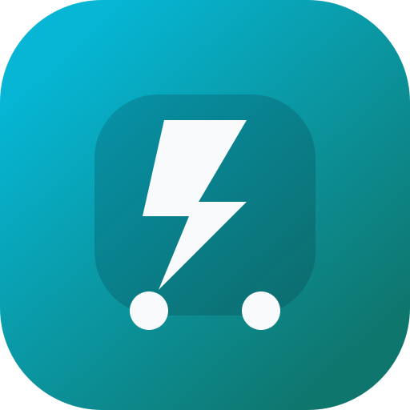

Son güncelleme: 21 Nisan 2026
VoltLog içinde işlenen veriler reklam ağına satılmaz. Yasal zorunluluklar dışında veriler üçüncü taraflarla paylaşılmaz.
Kayıtlar uygulama işlevlerini sürdürebilmek için gerekli süre boyunca saklanır. Kullanıcı verileri sildiğinde veya uygulamayı kaldırdığında bu kayıtlara erişim sona erer.
Veriler, platformun sunduğu güvenlik önlemleri ve uygulama içi makul koruma yöntemleri ile korunmaya çalışılır.
VoltLog genel kullanıcı kitlesine yöneliktir ve çocuklara özel olarak tasarlanmamıştır.
Kullanıcı kendi kayıtlarını görüntüleyebilir, düzenleyebilir ve silebilir. Politika ile ilgili talepler geliştirici iletişim kanalı üzerinden iletilebilir.
Bu uygulama için henüz aktif bir test bağlantısı eklenmedi.
Bu politika gerektiğinde güncellenebilir. Güncel sürüm her zaman bu sayfada yayımlanır.